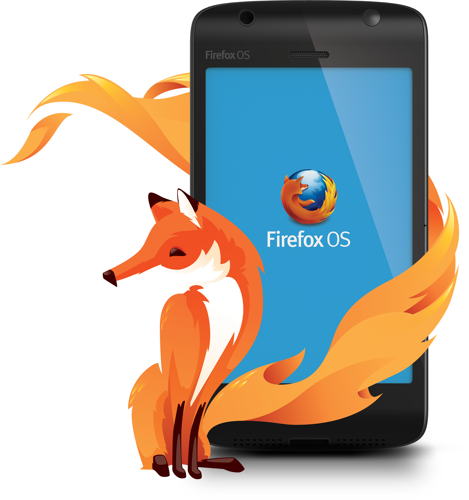

O Firefox OS é a nova plataforma móvel desenvolvido pelo projeto Boot to Gecko (B2G) da
Mozilla. Ele usa o Kernel do Linux e inicializa em um sistema baseado no Gecko que permite
que os usuários utilizem apps inteiramente desenvolvidos com HTML, CSS, Javascript e outras APIs da Web Aberta.